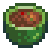
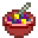
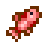
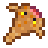
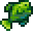

Receitas
| Imagem | Receita | Ingredientes | Onde conseguir a receita | |
|---|---|---|---|---|
 |
Ovo Frito |  Ovo (1) Ovo (1) |
Recompensa de atualização da Casa da Fazenda | |
 |
Omelete | Ovo (1)  Leite (1) Leite (1) |
Programa "Rainha do Molho", 28 da Primavera, Ano 1 | |
 |
Salada |  Alho-poró (1) Alho-poró (1)  Dente-de-Leão (1) Dente-de-Leão (1)  Vinagre (1) Vinagre (1) |
Mais de 3 corações com a Emily | |
 |
Couve-flor com Queijo |  Couve-flor (1) Couve-flor (1)  Queijo (1) Queijo (1) |
Mais de 3 corações com a Pam | |
 |
Peixe Assado |  Peixe-sol (1) Peixe-sol (1)  Brema (1) Brema (1)  Farinha de Trigo (1) Farinha de Trigo (1) |
Programa "Rainha do Molho", 7 do Verão, Ano 1 | |
 |
Sopa de Chirívia |  Chirívia (1) Leite (1) Vinagre (1) Chirívia (1) Leite (1) Vinagre (1) |
Mais de 3 corações com a Caroline | |
 |
Mexido de Legumes |  Tomate (1) *verão* Tomate (1) *verão*  Beterraba (1) *outono* Beterraba (1) *outono* |
Mais de 7 corações com a Caroline | |
 |
Café da Manhã Completo | Ovo Frito (1) Leite (1) Batata-palha (1)  Panquecas (1) Panquecas (1) |
Programa "Rainha do Molho", 21 da Primavera, Ano 2 | |
 |
Lula Frita |  Lula (1) Farinha de Trigo (1) Lula (1) Farinha de Trigo (1)  Óleo (1) Óleo (1) |
Mais de 3 corações com a Jodi | |
 |
Pão Estranho | Farinha de Trigo (1)  Caramujo (1) Caramujo (1)  Maionese Nula (1) Maionese Nula (1) |
Mais de 7 corações com o Shane | |
 |
Almoço da Sorte |  Pepino-do-mar (1) *outono, inverno* Pepino-do-mar (1) *outono, inverno* Tortilha (1) *verão, outono* Tortilha (1) *verão, outono* Jasmim-azul (1) *primavera* Jasmim-azul (1) *primavera* |
Programa "Rainha do Molho", 28 da Primavera, Ano 2 | |
 |
Cogumelo Frito |  Cogumelo Comum (1) Cogumelo Comum (1) Morel (1) Óleo (1) Morel (1) Óleo (1) |
Mais de 3 corações com o Demetrius | |
 |
Pizza | Farinha de Trigo (1) Tomate (1) Queijo (1) |
Programa "Rainha do Molho", 7 da Primavera, Ano 2 | |
 |
Sopa de Vagens |  Vagem (2) Vagem (2) |
Mais de 7 corações com o Clint | |
 |
Inhames com Cobertura |  Inhame (1) Inhame (1) Açucar (1) Açucar (1) |
Programa "Rainha do Molho", 21 do Outono, Ano 1 | |
 |
Carpa-surpresa |  Carpa (4) Carpa (4) |
Programa "Rainha do Molho", 7 do Verão, Ano 2 | |
| Batata-palha |  Batata (1) Óleo (1) Batata (1) Óleo (1) |
Programa "Rainha do Molho", 14 da Primavera, Ano 2 | ||
|
Panquecas | Farinha de Trigo (1) Ovo (1) |
Programa "Rainha do Molho", 14 do Verão, Ano 1 | |
 |
Jantar de Salmão |  Salmão (1) *outono* Salmão (1) *outono* Amaranto (1) *outono* Amaranto (1) *outono* Couve (1) *primavera* Couve (1) *primavera* |
Mais de 3 corações com o Gus | |
 |
Taco de Peixe |  Atum (1) Tortilha (1) Atum (1) Tortilha (1) Repolho roxo (1) Repolho roxo (1) Maionese (1) Maionese (1) |
Mais de 7 corações com o Linus | |
 |
Achigã Crocante |  Achigã (1) Farinha de Trigo (1) Óleo (1) Achigã (1) Farinha de Trigo (1) Óleo (1) |
Mais de 3 corações com o Kent | |
 |
Enroladinhos de Pimenta |  Pimenta (1) Queijo (1) Pimenta (1) Queijo (1) |
Mais de 3 corações com o Shane | |
 |
Pão | Farinha de Trigo (1) |
Programa "Rainha do Molho", 28 do Verão, Ano 1 | |
 |
Sopa Tom Kha |  Coco (1) Coco (1) Camarão (1) Cogumelo Comum (1) Camarão (1) Cogumelo Comum (1) |
Mais de 7 corações com a Sandy | |
 |
Sopa de Truta |  Truta Arco-íris (1) Truta Arco-íris (1) Algas Verdes (1) Algas Verdes (1) |
Programa "Rainha do Molho", 14 do Outono, Ano 1 | |
 |
Bolo de Chocolate | Farinha de Trigo (1) Açúcar (1) Ovo (1) |
Programa "Rainha do Molho", 14 do Inverno, Ano 1 | |
 |
Bolo Rosa |  Melão (1) Farinha de Trigo (1) Açúcar (1) Ovo (1) Melão (1) Farinha de Trigo (1) Açúcar (1) Ovo (1) |
Programa "Rainha do Molho", 21 do Verão, Ano 2 | |
 |
Torta de Ruibarbo |  Ruibarbo (1) Farinha de Trigo (1) Açúcar (1) Ruibarbo (1) Farinha de Trigo (1) Açúcar (1) |
Mais de 7 corações com a Marnie | |
 |
Biscoito | Farinha de Trigo (1) Açúcar (1) Ovo (1) |
Mais de 4 corações com a Evelyn (Vovó) | |
 |
Espaguete | Farinha de Trigo (1) Tomate (1) |
Mais de 3 corações com o Lewis | |
 |
Enguia Frita |  Enguia (1) Óleo (1) Enguia (1) Óleo (1) |
Mais de 3 corações com o George | |
 |
Enguia Picante | Enguia (1) *primavera, outono* Pimenta (1) *verão* |
Mais de 7 corações com o George | |
 |
Sashimi | Qualquer peixe (1) |
Mais de 3 corações com o Linus | |
 |
Rolinhos de Arroz | Qualquer peixe (1) Algas Marinhas (1) Algas Marinhas (1) Arroz (1) Arroz (1) |
Programa "Rainha do Molho", 21 do Verão, Ano 1 | |
|
Tortilha |  Milho (1) Milho (1) |
Programa "Rainha do Molho", 7 do Outono, Ano 1 | |
 |
Prato Vermelho | Repolho Roxo (1) Rabanete (1) Rabanete (1) |
Mais de 7 corações com a Emily | |
 |
Parmesão com Beringela |  Beringela (1) *outono* Tomate (1) *verão* Beringela (1) *outono* Tomate (1) *verão* |
Mais de 7 corações com o Lewis | |
 |
Pudim de Arroz | Leite (1) Açucar (1) Arroz (1) |
Mais de 7 corações com a Evelyn (Vovó) | |
 |
Sorvete | Leite (1) Açucar (1) |
Mais de 7 corações com a Jodi | |
 |
Torta de Mirtilo |  Mirtilo (1) Farinha de Trigo (1) Açucar (1) Ovo (1) Mirtilo (1) Farinha de Trigo (1) Açucar (1) Ovo (1) |
Mais de 3 corações com o Pierre | |
 |
Prato de Outono | Inhame (1) Abobora (1) Abobora (1) |
Mais de 7 corações com o Demetrius | |
 |
Sopa de Abóbora | Abobora (1) Leite (1) |
Mais de 7 corações com a Robin | |
 |
Superprato |  Couve chinesa (1) Couve chinesa (1) Oxicoco (1) Oxicoco (1) Alcachofra (1) Alcachofra (1) |
Mais de 7 corações com o Kent | |
 |
Molho de Oxicoco | Oxicoco (1) Açúcar (1) |
Mais de 7 corações com o Gus | |
|  | Recheio | Pão (1) Oxicoco (1) Avelã (1) Avelã (1) |
Mais de 7 corações com a Pam | |
 |
Almoço de Fazendeiro | Omelete (1) Chirivia (1) |
Habilidade Cultino Nível 3 | |
 |
Prato do Mar |  Sardinha (2) Sardinha (2)Batata-palha (1) |
Habilidade Pesca Nível 3 | |
 |
Refeição de Mineiro |  Cenoura Subterrâna (2) Açúcar (1) Leite (1) Cenoura Subterrâna (2) Açúcar (1) Leite (1) |
Habilidade Mineração Nível 3 | |
 |
Prato de Raízes | Cenoura Subterrâna (1) Raiz de Inverno (1) Raiz de Inverno (1) |
Habilidade Combate Nível 3 | |
 |
Café Expresso Triplo |  Café (3) Café (3) |
Saloon Fruta Estrelar por 5 000 ouros | |
 |
Pudim de Espuma do Mar |  Linguado (1) *primavera, verão* Linguado (1) *primavera, verão* Carpa da Meia-noite (1) *outono, inverno* Carpa da Meia-noite (1) *outono, inverno* Tinta de Lula (1) Tinta de Lula (1) |
Habilidade Pesca Nível 9 | |
 |
Sopa de Alga | Alga Verde (4) |
Mais de 3 corações com o Clint | |
 |
Caldo Pálido |  Algas Brancas (2) Algas Brancas (2) |
Mais de 3 corações com a Marnie | |
 |
Pudim de Ameixa |  Ameixa Selvagem (2) Farinha de Trigo (1) Açúcar (1) Ameixa Selvagem (2) Farinha de Trigo (1) Açúcar (1) |
Programa "Rainha do Molho", 7 do Inverno, Ano 1 | |
 |
Molho de Alcachofra | Alcachofra (1) Leite (1) |
Programa "Rainha do Molho", 28 do Outono, Ano 1 | |
 |
Refogado | Cenoura Subterrânea (1) Cogumelo Comum (1) Couve (1) Óleo (1) |
Programa "Rainha do Molho", 7 da Primavera, Ano 1 | |
 |
Avelãs Torradas | Avelã (3) |
Programa "Rainha do Molho", 28 do Verão, Ano 2 | |
 |
Torta de Abóbora | Abóbora (1) Farinha de Trigo (1) Leite (1) Açúcar (1) |
Programa "Rainha do Molho", 21 do Inverno, Ano 1 | |
 |
Salada de Rabanete | Óleo (1) Vinagre (1) Rabante (1) |
Programa "Rainha do Molho", 21 da Primavera, Ano 1 | |
|  | Salada de Frutas | Mirtilo (1) *verão* Melão (1) *verão* Damasco (1) *primavera* Damasco (1) *primavera* |
Programa "Rainha do Molho", 7 do Outono, Ano 2 | |
 |
Torta de Amoras |  Amora (2) Açúcar (1) Farinha de Trigo (1) Amora (2) Açúcar (1) Farinha de Trigo (1) |
Programa "Rainha do Molho", 14 do Outono, Ano 2 | |
 |
Doce de Oxicoco | Oxicoco (1) Maça (1) Açucar (1) Maça (1) Açucar (1) |
Programa "Rainha do Molho", 28 do Inverno, Ano 1 | |
 |
Brusqueta | Pão (1) Óleo (1) Tomate (1) |
Programa "Rainha do Molho", 21 do Inverno, Ano 2 | |
 |
Salada de Repolho | Repolho roxo (1) Vinagre (1) Maionese (1) |
Programa "Rainha do Molho", 14 da Primavera, Ano 1 | |
 |
Risoto de Samambaia | Óleo (1) Broto de Samambaia (1) *verão* Broto de Samambaia (1) *verão* Alho (1) *primavera* Alho (1) *primavera* |
Programa "Rainha do Molho", 28 do Outono, Ano 2 | |
 |
Bolinho de Papoula |  Papoula (1) Farinha de Trigo (1) Açúcar (1) Papoula (1) Farinha de Trigo (1) Açúcar (1) |
Programa "Rainha do Molho", 7 do Inverno, Ano 2 | |
 |
Sopa de Peixe |  Concha (1) Leite (1) Concha (1) Leite (1) |
Mais de 3 corações com o Willy | |
 |
Guisado de Peixe |  Lagostim (1) Lagostim (1) Mexilhão (1) Caramujo (1) Tomate (1) Mexilhão (1) Caramujo (1) Tomate (1) |
Mais de 7 corações com o Willy | |
 |
Escargô |  Lesma (1) Alho (1) Lesma (1) Alho (1) |
Mais de 5 corações com o Willy | |
 |
Bisque de Lagosta |  Lagosta (1) Leite (1) Lagosta (1) Leite (1) |
Mais de 9 corações com o Willy ou Programa "Rainha do Molho", 14 do Inverno, Ano 2 | |
 |
Pão de Ácer |  Xarope de Ácer (1) Açúcar (1) Farinha de Trigo (1) Xarope de Ácer (1) Açúcar (1) Farinha de Trigo (1) |
Programa "Rainha do Molho", 14 do Verão, Ano 2 | |
 |
Bolinhos de Caranquejo |  Caranguejo (1) Farinha de Trigo (1) Ovo (1) Óleo (1) Caranguejo (1) Farinha de Trigo (1) Ovo (1) Óleo (1) |
Programa "Rainha do Molho", 21 do Outono, Ano 2 | |
 |
Coquetel de Camarão | Tomate (1) *verão* Camarão (1) Raiz-forte (1) *primavera* Raiz-forte (1) *primavera* |
Programa "Rainha do Molho", 28 do Inverno, Ano 2 | |
 |
Ginger Ale |  Gengibre (3) Açúcar (1) Gengibre (3) Açúcar (1) |
Loja Caverna do Vulcão por 1 000 ouros | |
 |
Pudim de Banana |  Banana (1) Leite (1) Açúcar (1) Banana (1) Leite (1) Açúcar (1) |
Comerciante da Ilha por 30 Fragmentos de Ossos | |
 |
Arroz Doce de Manga |  Manga (1) Coco (1) Arroz (1) Manga (1) Coco (1) Arroz (1) |
Mais de 7 corações com o Leo | |
 |
Poi |  Inhame-coco (4) Inhame-coco (4) |
Mais de 3 corações com o Leo | |
 |
Curry Tropical | Coco (1) Abacaxi (1) Pimenta (1) Abacaxi (1) Pimenta (1) |
Resort da Praia por 2 000 ouros | |
 |
Ravioli de Tinta de Lula | Tinta de Lula (1) Farinha de Trigo (1) Tomate (1) |
Habilidade Combate Nível 9 | |
 |
Sopa de Musgo |  Musgo (20) Musgo (20) |
Habilidade Coleta Nível 3 |
Peixes
| Imagem | Peixe | Local | Hora | Estação | Clima | |
|---|---|---|---|---|---|---|
 |
Baiacu | Oceano | 12:00 - 16:00 | Verão | Ensolarado | |
 |
Anchova | Oceano | Qualquer | Primavera e Outono | Qualquer | |
|
Atum | Oceano | 06:00 - 19:00 | Verão e Inverno | Qualquer | |
|
Sardinha | Oceano | 06:00 - 19:00 | Primavera, Outono e Inverno | Qualquer | |
|
Brema | Rio (Cidade+Floresta) | 18:00 - 02:00 | Todas as Estações | Qualquer | |
|
Achigã | Lago da Montanha | 06:00 - 19:00 | Todas as Estações | Qualquer | |
 |
Achigã-pequeno | Rio (Cidade) Lago da Floresta |
Qualquer | Primavera e Outono | Qualquer | |
|
Truta Arco-Íris | Rio (Cidade+Floresta) Lago da Montanha |
06:00 - 19:00 | Verão | Ensolarado | |
|
Salmão | Rio (Cidade+Floresta) | 06:00 - 19:00 | Outono | Qualquer | |
 |
Picão-verde | Rio (Cidade+Floresta) Lago da Floresta |
12:00 - 02:00 | Outono Inverno *com Totem de Chuva* |
Chuvoso | |
 |
Perca | Rio (Cidade+Floresta) Lago da Floresta Lago da Montanha |
Qualquer | Inverno | Qualquer | |
|
Carpa | Lago da Montanha Lagoa do Bosque Secreto Os Esgotos |
Qualquer | Todas Estações | Qualquer | |
 |
Bagre | Rio (Cidade+Floresta) Lagoa do Bosque Secreto Pântano da Bruxa |
06:00 - 00:00 | Primavera Verão *Lago do Bosque Secreto* Outono |
Chuvoso | |
 |
Lúcio | Rio (Cidade+Floresta) Lago da Floresta |
Qualquer | Verão e Inverno | Qualquer | |
|
Peixe-sol | Rio (Cidade+Floresta) | 06:00 - 19:00 | Primavera e Verão | Ensolarado ou Ventando | |
 |
Salmonete | Oceano | 06:00 - 19:00 | Verão e Inverno | Qualquer | |
 |
Arenque | Oceano | Qualquer | Primavera e Inverno | Qualquer | |
|
Enguia | Oceano | 16:00 - 02:00 | Primavera e Outono | Chuvoso | |
 |
Polvo | Oceano | 06:00 - 13:00 | Verão | Qualquer | |
|  | Cioba | Oceano | 06:00 - 19:00 | Verão, Outono e Inverno | Chuvoso | |
|
Lula | Oceano | 18:00 - 08:00 | Inverno | Qualquer | |
|
Pepino-do-mar | Oceano | 06:00 - 19:00 | Outono e Inverno | Qualquer | |
 |
Superpepino | Oceano Oceano da Ilha Gengibre |
18:00 - 02:00 | Verão e Outono | Qualquer | |
 |
Peixe-fantasma | Mina (20º, 60º andar) Expólio de Fantasmas |
Qualquer | Todas as Estações | Qualquer | |
 |
Peixe-pedra | Mina (20º andar) | Qualquer | Todas as Estações | Qualquer | |
 |
Chione | Mina (60º andar) | Qualquer | Todas as Estações | Qualquer | |
 |
Enguia de Lava | Mina (100º andar) | Qualquer | Todas as Estações | Qualquer | |
|  | Areinha | O Deserto | 06:00 - 20:00 | Todas as Estações | Qualquer | |
 |
Carpa Escorpiônica | O Deserto *requer pesca nível 4* | 06:00 - 20:00 | Todas as Estações | Qualquer | |
|
Linguado | Oceano Oceano da Ilha Gengibre |
06:00 - 20:00 | Primavera e Verão | Qualquer | |
|
Carpa da Meia-noite | Lago da Montanha Lago da Floresta Lago e Rio da Ilha Gengibre |
22:00 - 02:00 | Outono e Inverno | Qualquer | |
 |
Esturjão | Lago da Montanha | 06:00 - 19:00 | Verão e Inverno | Qualquer | |
 |
Salmão Híbrido | Rio (Cidade+Floresta) | 06:00 - 19:00 | Outono e Inverno | Qualquer | |
 |
Peixe-gato-cabeçudo | Lago da Montanha | Qualquer | Todas Estações | Qualquer | |
 |
Tilápia | Oceano Rios da Ilha Gengibre |
06:00 - 14:00 | Verão e Outono | Qualquer | |
 |
Esquálio | Rio (Floresta) Lago da Montanha |
Qualquer | Todas as Estações | Qualquer | |
 |
Dourado | Rio (Floresta) | 06:00 - 19:00 | Verão | Qualquer | |
 |
Albacora | Oceano | 06:00 - 11:00 18:00 - 02:00 |
Outono e Inverno | Qualquer | |
 |
Alocine | Rio (Cidade+Floresta) | 09:00 - 02:00 | Primavera, Verão e Outono | Chuvoso | |
 |
Ófis | Rio (Cidade+Floresta) Lago da Montanha |
Qualquer | Inverno | Qualquer | |
 |
Halibute | Oceano Lago da Montanha |
06:00 - 11:00 19:00 - 02:00 |
Primavera, Verão e Inverno | Qualquer | |
 |
Madeirão | Lago do Bosque Secreto Fazenda na Floresta |
Qualquer | Todas as Estações | Qualquer | |
 |
Salmão Nulo | Pântano da Bruxa | Qualquer | Todas as Estações | Qualquer | |
|  | Salmão Mutante | Covil dos Insetos Mutantes | Qualquer | Todas as Estações | Qualquer | |
 |
Peixe-Leão | Oceano Ilha Gengibre | Qualquer | Todas as Estações | Qualquer | |
 |
Acará-disco Azul | Lagos e Rios da Ilha Gengibre | Qualquer | Todas as Estações | Qualquer | |
 |
Gobi | Cachoeira da Floresta Cinzenta | Qualquer | Todas as Estações | Qualquer | |
 |
Arraia | Caverna do Pirata (Ilha Gengibre) | Qualquer | Todas as Estações | Qualquer | |
 |
Lula da Meia-Noite | Submarino de Pesca (Mercado Noturno) | 17:00 - 02:00 | Inverno | Qualquer | |
 |
Peixe Assustador | Submarino de Pesca (Mercado Noturno) | 17:00 - 02:00 | Inverno | Qualquer | |
 |
Peixe-bolha | Submarino de Pesca (Mercado Noturno) | 17:00 - 02:00 | Inverno | Qualquer | |
 |
Peixe-carmim | Encontrado no pier leste na Praia *requer pesca nível 5* | Qualquer | Verão | Qualquer | |
 |
Tamboril | Ao norte do Mercado Joja na ponte de madeira*requer pesca nível 3* | Qualquer | Outono | Qualquer | |
 |
Lenda | Encontrado no lago da montanha. Maiores chance de morder perto do tronco no fundo*requer pesca nível 10* | Qualquer | Primavera | Chuvoso | |
 |
Peixe-gelo | Ao sul da Ilha Cabeça de Flecha na Floresta Cinzaseiva.*requer pesca nível 6* | Qualquer | Inverno | Qualquer | |
 |
Carpa Mutante | Os Esgotos | Qualquer | Todas as Estações | Qualquer |
 Covo
Covo
| Imagem | Nome | Local | Clima | |
|---|---|---|---|---|
|
Lagosta | Oceano | Todas as Estações | |
|
Concha | Oceano | Todas as Estações | |
|
Caranguejo | Oceano | Todas as Estações | |
 |
Berbigão | Oceano | Todas as Estações | |
|
Mexilhão | Oceano | Todas as Estações | |
|
Camarão | Oceano | Todas as Estações | |
 |
Ostra | Oceano | Todas as Estações | |
|
Lagostim | Rios e Lagos da Fazenda Rio da Montanha, Cidade e Floresta Cinzenta |
Todas as Estações | |
|
Lesma | Rios e Lagos da Fazenda Rio da Montanha, Cidade e Floresta Cinzenta |
Todas as Estações | |
|
Caramujo | Rios e Lagos da Fazenda Rio da Montanha, Cidade e Floresta Cinzenta |
Todas as Estações |